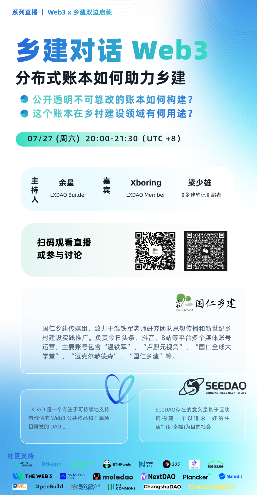

🚀在过去二十余年的发展中，当代乡村建设一直秉持自发自主、因地制宜的分布式发展模式，这与第三代互联网（Web3）的核心理念高度契合。Web3 以数字技术为乡村打开面向世界的通路，乡村为 Web3 提供扎根落地的养分，汇集二者的原点便是启蒙计划。

👏「乡建实践者 X Web3 探索者双边启蒙计划」旨在为探求新质生产力和新型生产关系发展的伙伴们，提供一个相互促进，彼此滋养，共同生长的学习交流空间。在本次 B 站首播中，我们精心准备了以下精彩内容，期待与您一同学习、探索和成长！
启蒙计划概览，首次公开深入介绍我们的计划理念与目标
Web3 技术原理分享，公开透明不可篡改的账本如何实现
深入分析乡村建设中 Web3 技术的应用场景及其未来前景
⏰直播时间：2024 年 7 月 27 日（周六）20:00-21:30（UTC+8）
📍直播链接：
https://live.bilibili.com/21863611?visit_id=nc1bj8o3isg&share_source=wechat
扫描海报二维码，或上哔哩哔哩搜索「国仁乡建」，一键关注！
👀本期嘉宾：
梁少雄丨《乡建笔记》编者 Xboring丨LXDAO Member
🎙主持人：
余星丨LXDAO Builder
🤝本场直播由 SeeDAO X LXDAO 共同举办，国仁乡建提供直播支持。